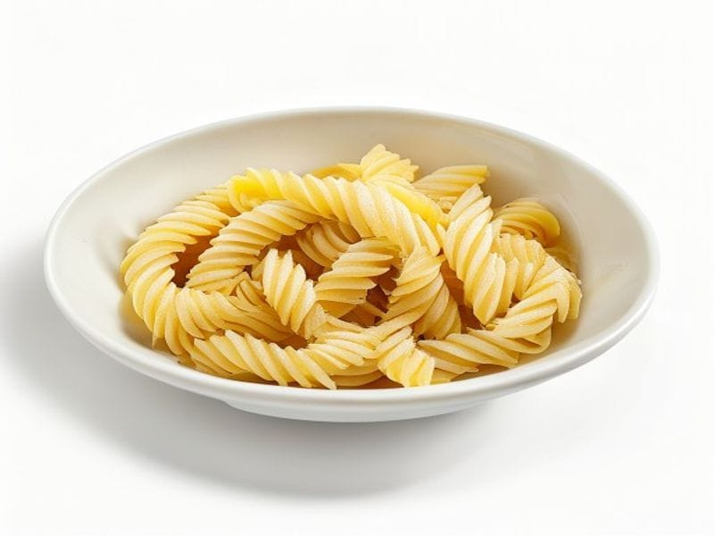

Polskie obiadki
Makaron chiński (gotowy)
Makaron chiński (gotowy): 6 g białka, 155 kcal, 22 g węglowodanów i 5 g tłuszczu na 100 g. Kategoria: Polskie obiadki.
Kalorie155 kcalna 100 g
Białko / proteiny6 g
Węglowodany22 g
Tłuszcz5 g
Cena (szac.)~1,76 złza 100 g
Ceny zaktualizowano: maj 2026 (szacunek — ceny w popularnych supermarketach)
Porcja: porcja (250g)
| Kalorie | 388 kcal |
|---|---|
| Białko | 15 g |
| Węglowodany | 55 g |
| Tłuszcz | 12.5 g |
| Cena (szac.) | ~4,39 zł |
Szczegółowe składniki odżywcze na 100 g
| Wartość energetyczna (kalorie) | 155 kcal |
|---|---|
| Białko (proteiny) | 6 g |
| Węglowodany | 22 g |
| Tłuszcz | 5 g |
| Tłuszcze nasycone | 1 g |
| Tłuszcze nienasycone | 4 g |
| Witaminy i minerały | Żelazo, Tiamina (B1), Potas |
| Współczynnik kcal / 1 g białka | 25.8 |
| Cena produktu (szac. za 100 g) | ~1,76 zł |
| Cena za 100 g białka (szac.) | ~29,27 zł |